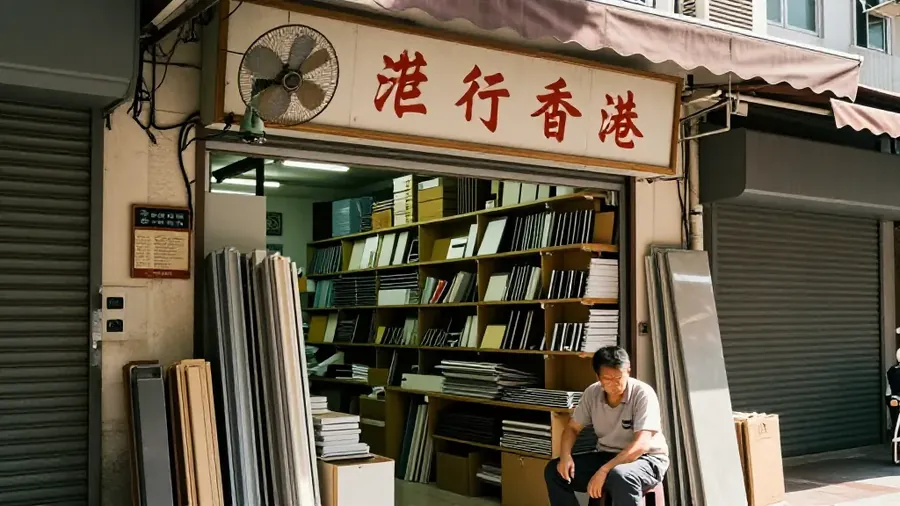
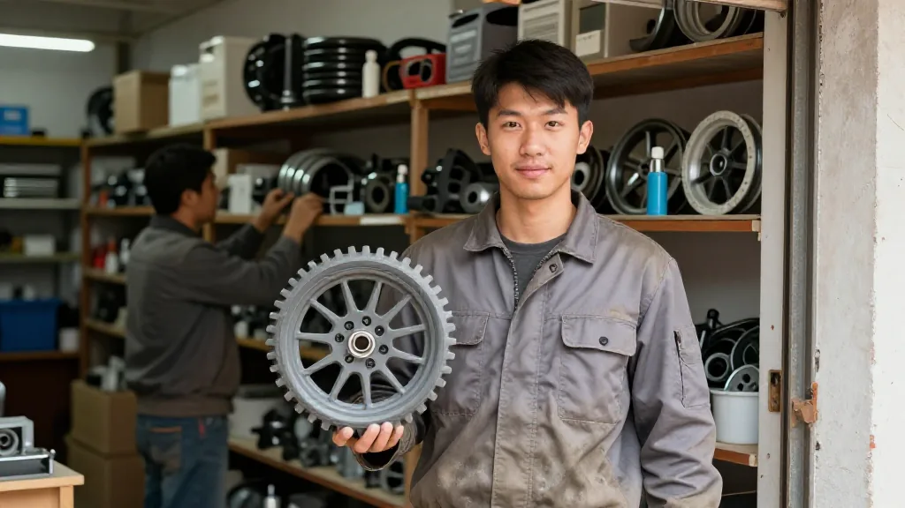
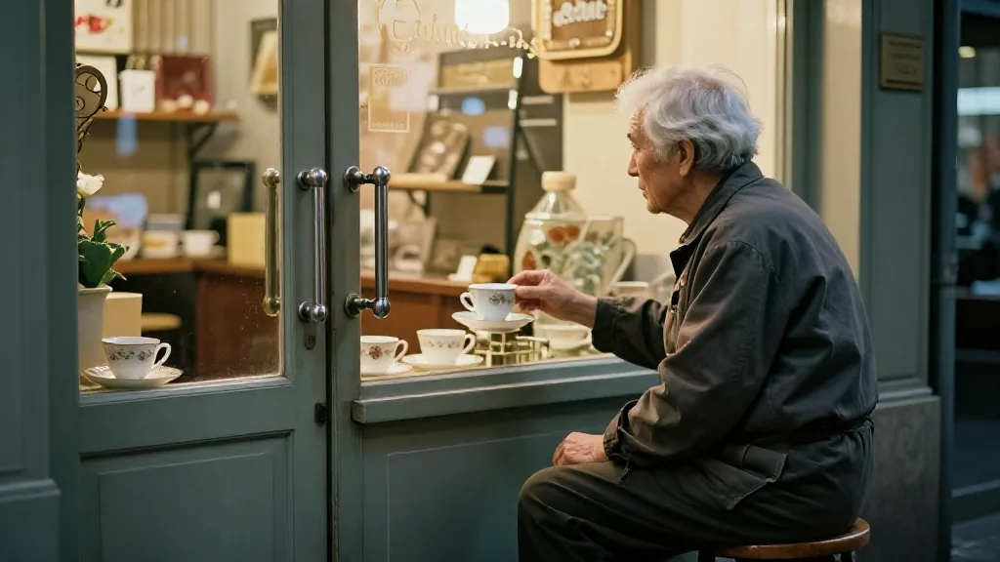

【鄭哥點評】 欄目：鄭哥博客點評
建材市場那句「很不好」，住建部三天前給咗答案

圖片由 AI輔助創作（Z-Image-Turbo）
鄭哥 Hany · 2026 年 9 月 23 日 · 下午 2 點
——建材老闆一句「很不好」，住建部三天前已經俾咗答案
昨天中午，我去了一趟建材市场。说实话，本来只是想随便转转，看看门窗和五金的行情，结果一杯茶没喝完，就听了一肚子实话。
走进陈老板那间铺头的时候，他正坐喺风扇底下打盹。铺面不大，两边堆满了门窗执手、合页、滑轨，地上还有几扇样板门。见到我，佢赶紧企起身，递过嚟一支烟，笑着讲，郑哥，好耐冇见，今日咩风吹你过嚟。
我就直接问佢，老陈，最近门窗五金生意点样。佢个笑容一下就收咗，摇摇头讲了四个字，很不好。呢四个字佢讲得好平静，唔系抱怨，似系已经接受咗好耐。
我问，生意差到咩程度。佢话，以前靠新楼盘，一栋楼交楼，成栋楼的门窗五金跟着走，量大，来钱快。而家新楼少咗好多，房地产没落咗，肯定连带住我哋。家下靠咩，靠人哋嚟补货。边个铰链坏咗，边个滑轮唔顺，装修师傅过嚟配返几个。复购率系强，但都系散单，一单几十蚊，一单百几蚊，要守住成间铺，真系唔容易。
正讲住，一个着住灰色工衣、裤脚沾住白灰的后生仔行入嚟，手里拎住一个坏咗的滑轮。老板，呢只轮有冇货，要四个。陈老板睇一眼，转身就喺架上捡咗四个出嚟，二十蚊。后生仔扫码俾钱，拎住就走，前后唔够两分钟。陈老板指住佢背影同我讲，睇到冇，就系呢啲，装修佬阿强，成日帮人翻新旧房，轮啊锁啊成日要换。呢啲就系我而家嘅衣食父母。
我问阿强，最近翻新多唔多。佢话，多，旧房多。新楼买唔起，咪将旧屋执下，换个门窗五金，换个锁，成间屋精神晒。一个业主咁讲，装一次修，住十年八年，下次再搵我，都唔知几时。陈老板喺旁边接话，系啊，一个人装修一次，差不多管十年二十年。所以我哋呢行，系传统生意，慢，一次买卖管好多年。
呢个时候，隔壁铺的梁叔行过嚟凑热闹。梁叔做五金二十几年，头发都白晒。佢一坐低就讲，郑哥，你做电子嘅，你哋唔同。你哋一部手机用两年就换，我哋一只合页用十年都唔坏。坏咗先有人嚟，唔坏就冇声冇气。我话，梁叔，电子都唔好过，华强北都静咗。佢笑住讲，起码你哋仲有新嘢出，年年有新款。我哋呢，款式十年都系咁，拼嘅就系边个守得耐。
一句话讲到我心入面。电子系快生意，靠新品续命。建材系慢生意，靠时间熬。两种唔好，唔系同一种唔好。
夜晚返到屋企，我刷手机，睇到三日前9月18日国新办那场发布会，住建部讲十五五住房建设的高质量发展。副部长陈绍旺讲咗一串话，其中两句一下击中我：房地产市场供求关系发生重大变化，房地产进入存量时代。房地产市场监管司司长张雪涛仲俾咗数字，二手房交易占比，2020年系27%，2025年到46%，今年前八个月，已经到52%。超过50%，就标志住进入存量时代。
我即刻谂起下昼陈老板那句房地产没落咗。原来佢喺铺头感受到的寒气，国家层面已经盖咗章。唔系佢一间铺唔好，系成个增量时代过去咗。以前系起新楼、交新楼、装新门窗，一条龙。而家系二手房交易过半，边个买咗二手房，咪要翻新，要换门窗五金。陈老板话靠补货顶住，顶的正正就系呢个存量。
发布会仲有两件事，同佢哋息息相关。一件系现房销售。张雪涛话，现房销售已经系大势所趋，一手交钱一手交货，所见即所得，从根本上防交付风险。呢个对建材系双刃剑，现房交得越规范，批量门窗需求越稳，但账期和质量要求一定更高，散铺想吃大单更难。第二件系公积金。新修订的住房公积金管理条例，9月20日正式实施，提取情形由6种加到9种，老百姓日常的装修住房、交物业费都可以提取。装修可以动用公积金，对陈老板系好消息，业主手头松动，翻新意愿就会强啲，补货单自然多啲。
我又查了今年前八个月的数据，房屋竣工面积同比下降23.7%，住宅竣工下降25.4%。东吴证券那份半年报话，装修建材二季度收入增速转负5.5%。深加工企业手头订单得翻八到十日，五年最低。数字冰冷，但同下昼铺头那一幕对得上：大单冇咗，散单撑住，唔敢备货，随用随采。
所以陈老板那句同我们电子不一样，我越谂越有味道。电子唔好，系技术换代快、价格战狠，但起码仲有AI终端、仲有出海、仲有新品讲故事。建材唔好，系十年一装的低频宿命，新楼冇咗，就只能等旧房翻新。一边系快，一边系慢。快的有快的焦虑，慢的有慢的煎熬。
临走那阵，陈老板同我讲，郑哥，我唔贪心，守住呢间铺，有口饭食就得。梁叔拍拍佢膊头，守咯，旧房咁多，门窗总会坏，坏咗就要换，换就要搵我哋。阿强喺门口探头入嚟补一句，系啊陈老板，下次滑轮再坏，我再嚟帮衬。全铺人都笑咗。
返程路上我一路谂，存量时代四个字，听落好大，但落到地面，就系呢啲：一个滑轮二十蚊，一只铰链十几蚊，一次翻新管十年。增量冇咗并唔等于需求冇咗，而系需求碎咗、散咗、慢咗。边个肯弯腰捡散单，边个把复购做成老关系，边个就喺存量里面活落去。
用心交朋友，才能把订单做完。我上次写WTS那篇讲过呢句，今日喺建材市场又应验一次。陈老板守的唔系货，系阿强呢啲装修佬的人情。十年二十年先装一次，但中间无数次补货，全靠平时的交情。电子也好，建材也好，增量过去之后，拼的都系同一件事：边个值得被记住，边个值得被回头搵。
订单是一时的，信任是一辈子的。这句话，建材佬比电子佬体会得更深。

圖片由 AI輔助創作（Z-Image-Turbo）

圖片由 AI輔助創作（Z-Image-Turbo）
圖片由 AI輔助創作（Z-Image-Turbo）
📞 合作聯繫
WhatsApp: +852 6641 7912
七善門科技 · 星辰算力
#建材市場 #門窗五金 #存量時代 #住建部 #二手房 #住房公積金 #舊房翻新 #外貿老炮兒 #鄭哥Hany #七善門科技 #星辰算力
[Hany’s take] Column: Hany’s blog review
"That ‘Pretty Bad’ at the Building-Materials Market — the Housing Ministry Gave the Answer Three Days Ago"
Image AI-assisted (Z-Image-Turbo)
Hany · September 23, 2026 · 2 PM
— The building-materials boss said "pretty bad"; the Housing Ministry had already given him the answer three days earlier
Yesterday at noon I went to the building-materials market. Honestly, I only meant to wander around and check prices on doors, windows and hardware. In the end I hadn't finished one cup of tea before I'd heard a bellyful of plain truth.
When I walked into Mr. Chen's shop he was dozing under the fan. It isn't big. Both sides are stacked with door handles, hinges and sliding rails, and there are a few sample doors on the floor. When he saw me he scrambled up, offered me a cigarette and said with a grin, "Hany, long time no see. What wind blew you over today?"
I asked him straight out, "Old Chen, how's the door-and-window hardware business lately?" The grin folded up at once. He shook his head and said four words: "Pretty bad." He said it very calmly. Not a complaint — more like something he'd accepted a long time ago.
I asked how bad. He said: "We used to live off new developments. A tower gets handed over and the whole building's door-and-window hardware follows it — big volume, fast money. Now there's far less new building. Property has declined, and of course it drags us down with it. So what do we live on now? People coming in to top up stock. A hinge breaks, a roller jams, the renovation guy comes by to pick up a few. The repeat rate is strong, but they're all odd-lot orders — a few dozen dollars here, a hundred-odd there. Keeping a whole shop standing on that is really not easy."
Right in the middle of that, a young fellow came in wearing a grey work shirt with white plaster on his trouser cuffs, carrying one broken roller. "Boss, got this wheel? I need four." Mr. Chen glanced at it, turned and picked four off the rack. Twenty dollars. The young man scanned, paid, took them and left — the whole thing under two minutes. Mr. Chen pointed at his back and told me, "See that? That's what it is now. That's Qiang, the renovation guy. He's always doing up old flats for people. Rollers, locks, they need changing all the time. These are my bread and butter now."
I asked Qiang whether there's a lot of renovation work lately. He said there is, plenty — lots of old flats. "If you can't afford a new one, you tidy up the old place: swap the door-and-window hardware, change the lock, and the whole flat feels new." One owner told him, "Do a renovation once, live in it ten or twenty years. Next time I look you up, who knows when that'll be." Mr. Chen cut in from the side, "Exactly. A man renovates once, and that pretty much covers him for ten or twenty years. So our line is a traditional business — slow. One sale carries you for years."
Just then Uncle Leung from the next shop wandered over for the fun of it. Uncle Leung has been in hardware over twenty years and his hair has gone completely white. The moment he sat down he said, "Hany, you do electronics, you're different. Your phone gets replaced every two years. One of my hinges lasts ten years without breaking. People only come when it breaks; when nothing breaks, not a sound, not a peep." I said, "Uncle Leung, electronics aren't having an easy time either. Huaqiangbei has gone quiet too." He laughed and said, "At least you've still got new things coming out. A new model every year. Us? The same styles for ten years. What we compete on is who can hold out longer."
That one line landed right inside me. Electronics is a fast business — it lives on new products. Building materials is a slow business — it lives on outlasting time. Two kinds of bad, and they are not the same kind of bad.
Back home that night I was scrolling my phone and saw that press conference from three days earlier, September 18, at the State Council Information Office — the Ministry of Housing and Urban-Rural Development talking about high-quality development of housing construction in the 15th Five-Year Plan. Vice Minister Chen Shaowang said a string of things, and two of them hit me at once: the supply-demand relationship in the property market has undergone major changes, and real estate has entered the stock era. Zhang Xuetao, director of the Real Estate Market Regulation Department, even gave the numbers: second-hand housing as a share of transactions was 27% in 2020, 46% in 2025, and in the first eight months of this year it is already 52%. Above 50% marks entry into the stock era.
I immediately thought of Mr. Chen that afternoon — "property has declined." So the chill he felt in his shop has already been stamped at the national level. It isn't that one shop of his is doing badly; an entire era of increments is over. Before, it was build new towers, hand over new towers, fit new doors and windows — one long chain. Now second-hand transactions are over half the market, and whoever buys a second-hand flat has to renovate it and change the door-and-window hardware. Mr. Chen says he's holding on with top-up orders, and what he's holding on to is exactly that stock.
There were two more things at that press conference that are closely tied to him. One was sales of completed housing. Zhang Xuetao said selling completed homes is already the general trend — cash on one side, goods on the other, what you see is what you get, which fundamentally prevents delivery risk. For building materials that's a double-edged sword: the more standardised completed-home delivery is, the steadier bulk demand for doors and windows becomes — but payment terms and quality requirements will certainly be tougher, and it gets harder for a scattered little shop to win a big order. The second was the housing provident fund. The newly revised Regulations on the Administration of Housing Provident Fund took effect on September 20; withdrawal situations went from 6 to 9, so ordinary people can now withdraw for day-to-day home renovation and for paying property management fees. Being able to use the provident fund for renovation is good news for Mr. Chen: with owners' wallets a bit looser, the willingness to renovate gets stronger, and top-up orders naturally get more frequent.
I also looked up the figures for the first eight months of this year: floor space completed fell 23.7% year-on-year, residential completions fell 25.4%. A half-year report from Soochow Securities said renovation building-materials revenue growth turned negative in Q2, at –5.5%. Deep-processing firms are holding only eight to ten days of orders — a five-year low. The numbers are cold, but they match that scene in the shop that afternoon: the big orders are gone, the odd lots are holding things up, nobody dares build inventory, and everyone buys only as they use.
So Mr. Chen's line about "not the same as you electronics people" tastes richer the more I chew on it. When electronics is bad, it's because technology turns over fast and price wars are savage — but at least there are still AI devices, still overseas markets, still new products to tell a story with. When building materials is bad, it's the low-frequency fate of one renovation every ten years: the new towers are gone, so all you can do is wait for old flats to be done up. One side is fast, one side is slow. The fast have the anxiety of fast; the slow have the torment of slow.
As I was leaving, Mr. Chen told me, "Hany, I'm not greedy. If I can hold on to this shop and keep a bowl of rice, that's enough." Uncle Leung patted his shoulder: "Hold on. There are so many old flats. Doors and windows will always break, and when they break they have to be changed, and when they're changed they have to come to us." Qiang poked his head in from the doorway and added, "That's right, Mr. Chen. Next time the roller breaks, I'll be back to give you the business." The whole shop laughed.
On the way back I kept thinking: "stock era" is a big phrase, but on the ground it comes down to this — one roller for twenty dollars, one hinge for a dozen-odd, one renovation that lasts ten years. The increment being gone doesn't mean demand is gone; it means demand has shattered, scattered, slowed down. Whoever is willing to bend down and pick up the odd lots, whoever turns repeat purchases into old relationships, is the one who keeps living inside the stock.
Trade begins with friends, not orders — that's the line I wrote in the WTS piece last time, and today at the building-materials market it came true again. What Mr. Chen is protecting isn't stock, it's the goodwill of renovators like Qiang. A renovation happens once every ten or twenty years, but in between there are countless top-ups, and those all depend on the ordinary everyday relationship. Electronics or building materials — once the increment era is over, everyone is competing at the same thing: who is worth remembering, who is worth coming back to.
An order lasts a moment; trust lasts a lifetime. Building-materials people feel that line deeper than electronics people do.
Image AI-assisted (Z-Image-Turbo)
Image AI-assisted (Z-Image-Turbo)
Image AI-assisted (Z-Image-Turbo)
📞 Get in touch
WhatsApp: +852 6641 7912
Qishanmen Tech · Star Compute
#BuildingMaterialsMarket #DoorAndWindowHardware #StockEra #MOHURD #SecondHandHomes #HousingProvidentFund #OldFlatRenovation #ForeignTradeVeteran #Hany #QishanmenTech #StarCompute
📌 我投資嘅訂造奢侈品品牌 HANDSOME 而家做緊海外獨立站， 只做三種訂造材質：芳綸纖維、頭層皮革、防摔。 — 睇下三個系列 → 📌 HANDSOME, the bespoke luxury brand I invested in, now sells direct to overseas customers — aramid fibre, full-grain leather and drop protection. See the collections →